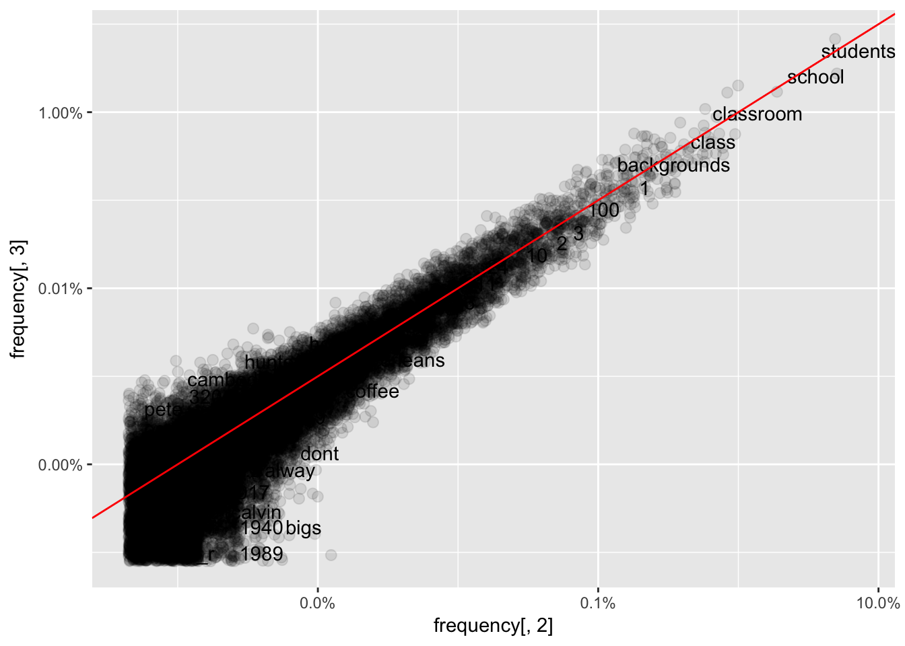
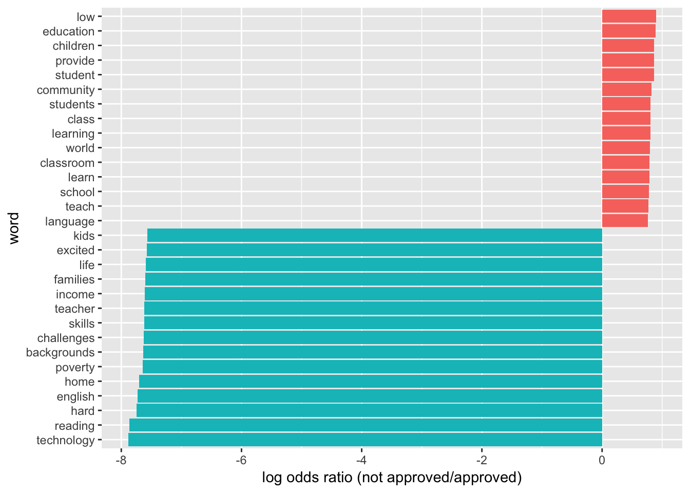
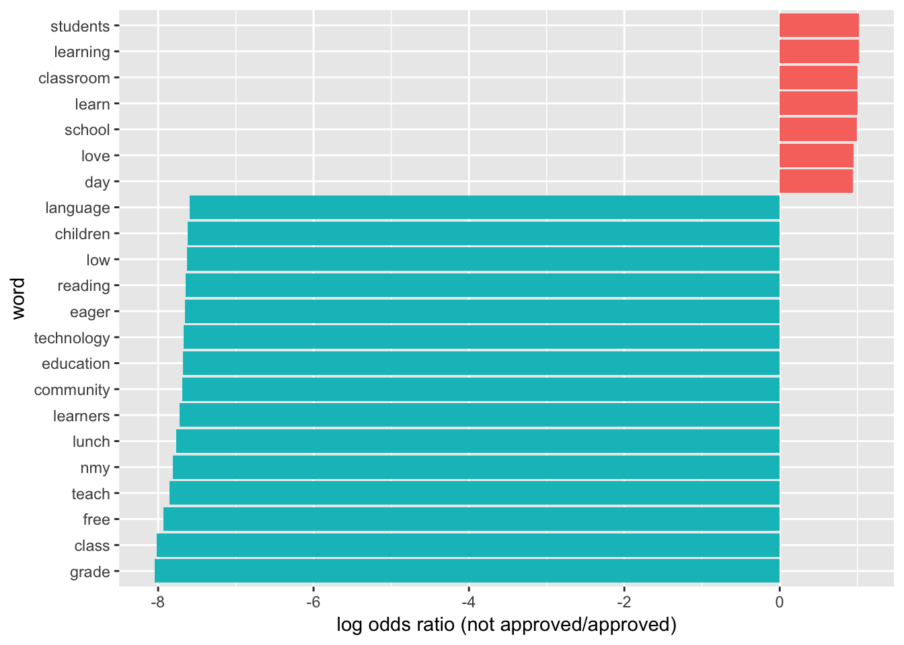
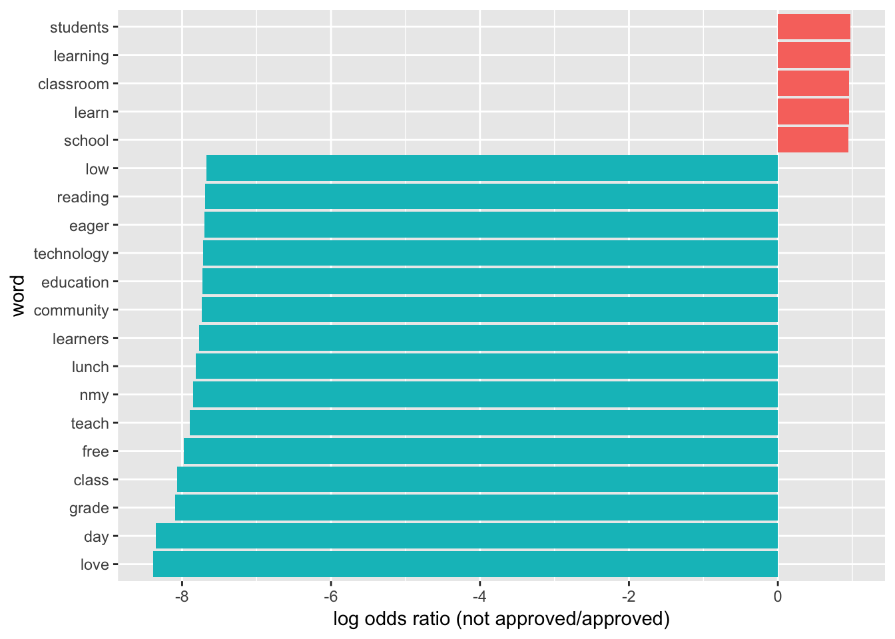
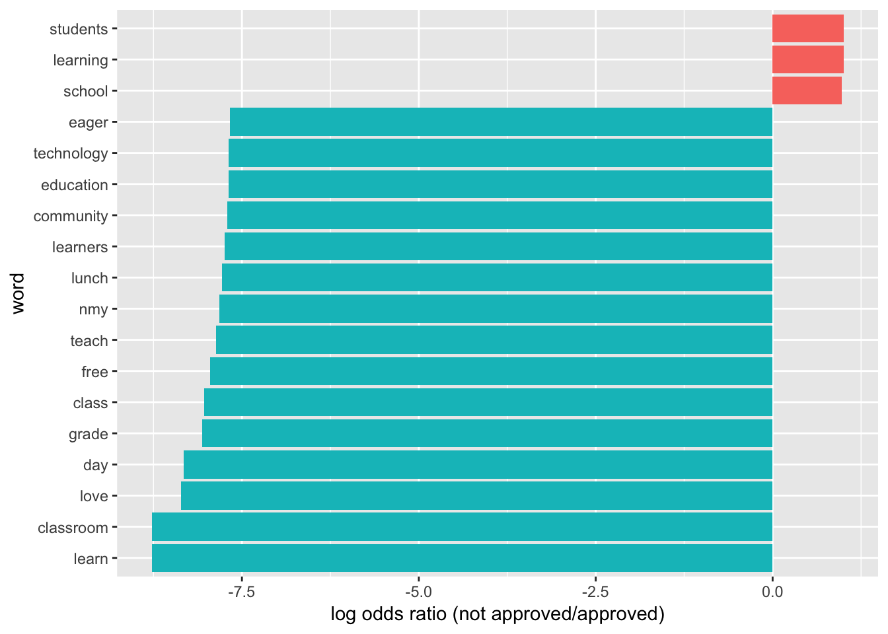
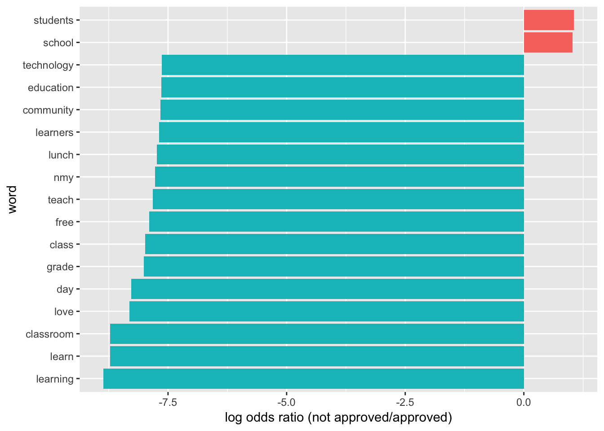
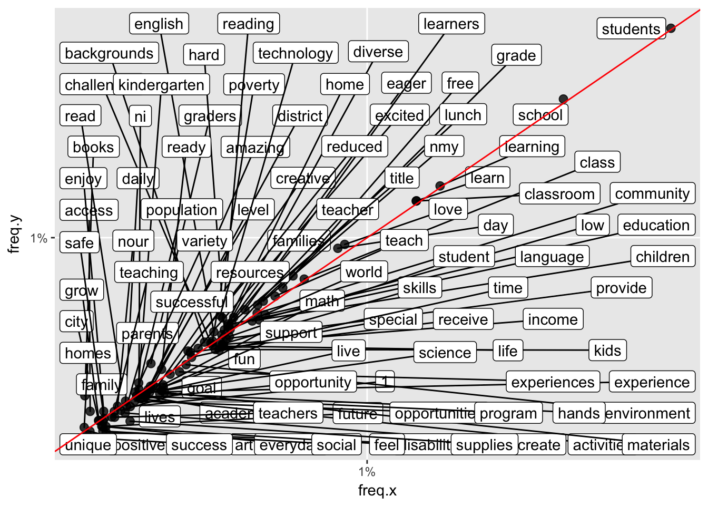
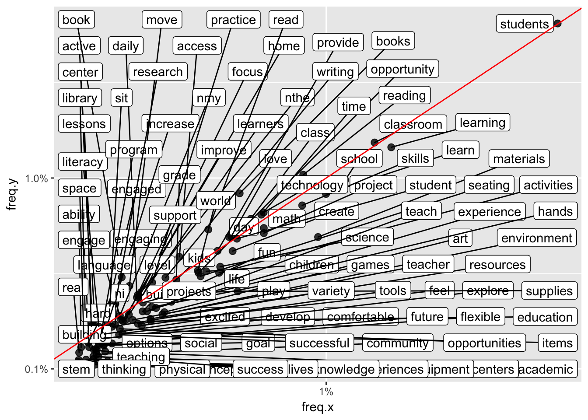
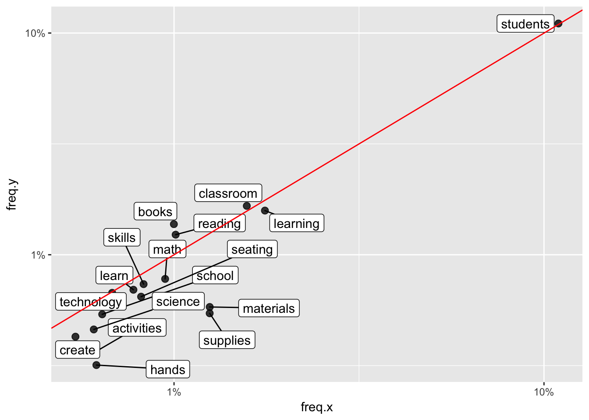
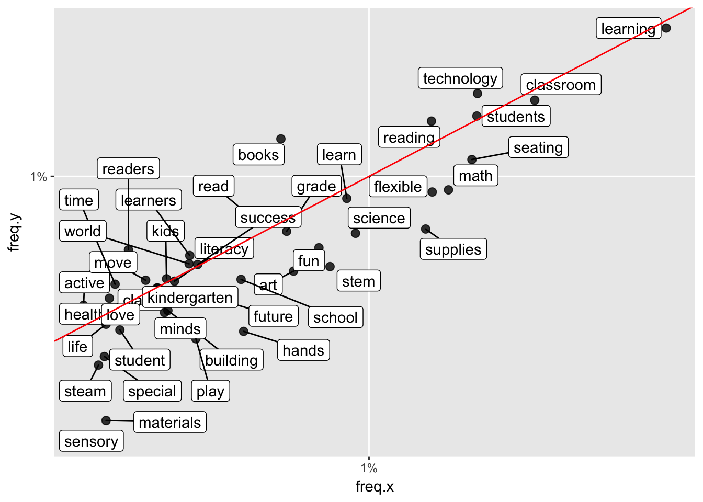

Last updated: 2018-04-15
Code version: 5a57fa1
Driving question: Are certain words more likely to be associated with “approved” applications and others with “non approved” words?
The following RMarkdown file uses files from Donors Choose and performs preliminary analysis with Latent Dirichlet allocation. The sentiment analysis was aided by the code and explanations provided in chapter 6 https://www.tidytextmining.com/.
# Libraries
library(dplyr)
Attaching package: 'dplyr'The following objects are masked from 'package:stats':
filter, lagThe following objects are masked from 'package:base':
intersect, setdiff, setequal, unionlibrary(stringr)
library(tidytext)Warning: package 'tidytext' was built under R version 3.4.4library(ggplot2)
library(tidyverse)── Attaching packages ────────────────────────────────────────────────────────────────────── tidyverse 1.2.1 ──✔ tibble 1.4.2 ✔ readr 1.1.1
✔ tidyr 0.7.2 ✔ purrr 0.2.4
✔ tibble 1.4.2 ✔ forcats 0.2.0── Conflicts ───────────────────────────────────────────────────────────────────────── tidyverse_conflicts() ──
✖ dplyr::filter() masks stats::filter()
✖ dplyr::lag() masks stats::lag()library("quanteda")Warning: package 'quanteda' was built under R version 3.4.4Package version: 1.1.1Parallel computing: 2 of 8 threads used.See https://quanteda.io for tutorials and examples.
Attaching package: 'quanteda'The following object is masked from 'package:utils':
Viewlibrary("plotly")
Attaching package: 'plotly'The following object is masked from 'package:ggplot2':
last_plotThe following object is masked from 'package:stats':
filterThe following object is masked from 'package:graphics':
layout# Open the datasets
train <- read.csv("~/Dropbox/DonorsChoose/train.csv")
test <- read.csv("~/Dropbox/DonorsChoose/test.csv")
resources <- read.csv("~/Dropbox/DonorsChoose/resources.csv")# First, we want to select project id, essay 1, and if the project was approved or not
id_title <- c(1, 16, 10)
train_text <- train[,id_title]
train_text[,1] <- as.character(train_text[,1])
train_text[,2] <- as.numeric(train_text[,2])
train_text[,3] <- as.character(train_text[,3])
train_text <- as.tibble(train_text)
tidy_books <- train_text %>% unnest_tokens(word, project_essay_1)
# Take out stop (common) words
tidy_books <- tidy_books %>%
anti_join(stop_words)Joining, by = "word"word_counts <- tidy_books %>%
anti_join(stop_words) %>%
count(id, word, sort = TRUE) %>%
ungroup()Joining, by = "word"# Convert dtm
#chapters_dtm <- word_counts %>%
# cast_dtm(id, word, n)
#chapters_dtm
# We have two topics (approved and not approved); set a seed so that the output of the model is predictable
#ap_lda <- LDA(chapters_dtm, k = 2, control = list(seed = 1234))
#topics <- tidy(ap_lda, matrix = "beta")
# Fnd the top words
#top_terms <- topics %>%
# group_by(topic) %>%
# top_n(5, beta) %>%
# ungroup() %>%
# arrange(topic, -beta)
#top_terms %>%
# mutate(term = reorder(term, beta)) %>%
# ggplot(aes(term, beta, fill = factor(topic))) +
# geom_col(show.legend = FALSE) +
# facet_wrap(~ topic, scales = "free") +
# coord_flip()
# chapters_gamma <- tidy(ap_lda, matrix = "gamma")
# Look at frequency of different words
frequency <- tidy_books %>%
group_by(project_is_approved) %>%
count(word, sort = TRUE) %>%
left_join(tidy_books %>%
group_by(project_is_approved) %>%
summarise(total = n())) %>%
mutate(freq = n/total)Joining, by = "project_is_approved"frequency <- frequency %>%
select(project_is_approved, word, freq) %>%
spread(project_is_approved, freq)
library(scales)
Attaching package: 'scales'The following object is masked from 'package:purrr':
discardThe following object is masked from 'package:readr':
col_factorggplot(frequency, aes(frequency[,2], frequency[,3])) +
geom_jitter(alpha = 0.1, size = 2.5, width = 0.25, height = 0.25) +
geom_text(aes(label = word), check_overlap = TRUE, vjust = 1.5) +
scale_x_log10(labels = percent_format()) +
scale_y_log10(labels = percent_format()) +
geom_abline(color = "red")Warning: Removed 26368 rows containing missing values (geom_point).Warning: Removed 26368 rows containing missing values (geom_text).
graph_associated_words <- function(min_freq){
word_ratios <- tidy_books %>%
filter(!str_detect(word, "_")) %>%
count(word, project_is_approved)
word_ratios <- word_ratios[which(word_ratios$n > min_freq), ]
new_word_ratios <- word_ratios %>%
ungroup() %>%
spread(project_is_approved, n, fill = 0) %>%
mutate_if(is.numeric, funs((. + 1) / sum(. + 1)))
logratio <- log(new_word_ratios[,2] / new_word_ratios[,3])
new_word_ratios <- cbind(new_word_ratios, logratio)
colnames(new_word_ratios) <- c("word", "not_approved", "approved", "logratio")
#arrange_new_word_ratios <- new_word_ratios[order(new_word_ratios[,4]),]
#arrange_new_word_ratios <- new_word_ratios[order(-new_word_ratios[,4]),]
new_word_ratios %>%
arrange(abs(new_word_ratios[,4]))
new_word_ratios %>%
group_by(logratio < 0) %>%
top_n(15, abs(logratio)) %>%
ungroup() %>%
mutate(word = reorder(word, logratio)) %>%
ggplot(aes(word, logratio, fill = logratio < 0)) +
geom_col(show.legend = FALSE) +
coord_flip() +
ylab("log odds ratio (not approved/approved)") +
scale_fill_discrete(name = "", labels = c("Not approved", "Approved"))
}
# Graph words associated with approved and not approved at different minimium frequencies
graph_associated_words(5000)
graph_associated_words(10000)
graph_associated_words(15000)
graph_associated_words(20000)
graph_associated_words(25000)
library(purrr)
library("ggrepel")
# Get frequency of words
frequency <- tidy_books %>%
group_by(project_is_approved) %>%
count(word, sort = TRUE) %>%
left_join(tidy_books %>%
group_by(project_is_approved) %>%
summarise(total = n())) %>%
mutate(freq = n/total)Joining, by = "project_is_approved"# Select words that have been used at least 2000 times
frequency_50 <- frequency[which(frequency$n > 2000),]
frequency_50_0 <- frequency_50[which(frequency_50$project_is_approved != 1), ]
frequency_50_1 <- frequency_50[which(frequency_50$project_is_approved == 1), ]
appears_twice <- merge(frequency_50_0, frequency_50_1, by = c("word"))
dim(appears_twice)[1] 99 9ggplot(appears_twice, aes(freq.x, freq.y)) +
geom_point(alpha = 0.8, size = 2.5, width = 0.25, height = 0.25) +
geom_label_repel(aes(label = word)) +
scale_x_log10(labels = percent_format()) +
scale_y_log10(labels = percent_format()) +
geom_abline(color = "red")Warning: Ignoring unknown parameters: width, height
p <- ggplot(appears_twice, aes(freq.x, freq.y)) +
geom_point(aes(text = word), alpha = 0.8, size = 2.5, width = 0.25, height = 0.25) +
scale_x_log10(labels = percent_format()) +
scale_y_log10(labels = percent_format()) +
geom_abline(color = "red")Warning: Ignoring unknown parameters: width, heightWarning: Ignoring unknown aesthetics: textggplotly(p)We recommend that you use the dev version of ggplot2 with `ggplotly()`
Install it with: `devtools::install_github('hadley/ggplot2')`id_title <- c(1, 16, 11)
train_text <- train[,id_title]
train_text[,1] <- as.character(train_text[,1])
train_text[,2] <- as.numeric(train_text[,2])
train_text[,3] <- as.character(train_text[,3])
train_text <- as.tibble(train_text)
tidy_books <- train_text %>% unnest_tokens(word, project_essay_2)
# Take out stop (common) words
tidy_books <- tidy_books %>%
anti_join(stop_words)Joining, by = "word"word_counts <- tidy_books %>%
anti_join(stop_words) %>%
count(id, word, sort = TRUE) %>%
ungroup()Joining, by = "word"frequency <- tidy_books %>%
group_by(project_is_approved) %>%
count(word, sort = TRUE) %>%
left_join(tidy_books %>%
group_by(project_is_approved) %>%
summarise(total = n())) %>%
mutate(freq = n/total)Joining, by = "project_is_approved"# Select words that have been used at least 2000 times
frequency_50 <- frequency[which(frequency$n > 2000),]
frequency_50_0 <- frequency_50[which(frequency_50$project_is_approved != 1), ]
frequency_50_1 <- frequency_50[which(frequency_50$project_is_approved == 1), ]
appears_twice <- merge(frequency_50_0, frequency_50_1, by = c("word"))
dim(appears_twice)[1] 104 9ggplot(appears_twice, aes(freq.x, freq.y)) +
geom_point(alpha = 0.8, size = 2.5, width = 0.25, height = 0.25) +
geom_label_repel(aes(label = word)) +
scale_x_log10(labels = percent_format()) +
scale_y_log10(labels = percent_format()) +
geom_abline(color = "red")Warning: Ignoring unknown parameters: width, height
p <- ggplot(appears_twice, aes(freq.x, freq.y)) +
geom_point(aes(text = word), alpha = 0.8, size = 2.5, width = 0.25, height = 0.25) +
scale_x_log10(labels = percent_format()) +
scale_y_log10(labels = percent_format()) +
geom_abline(color = "red")Warning: Ignoring unknown parameters: width, heightWarning: Ignoring unknown aesthetics: textggplotly(p)We recommend that you use the dev version of ggplot2 with `ggplotly()`
Install it with: `devtools::install_github('hadley/ggplot2')`id_title <- c(1, 16, 14)
train_text <- train[,id_title]
train_text[,1] <- as.character(train_text[,1])
train_text[,2] <- as.numeric(train_text[,2])
train_text[,3] <- as.character(train_text[,3])
train_text <- as.tibble(train_text)
tidy_books <- train_text %>% unnest_tokens(word, project_resource_summary)
# Take out stop (common) words
tidy_books <- tidy_books %>%
anti_join(stop_words)Joining, by = "word"word_counts <- tidy_books %>%
anti_join(stop_words) %>%
count(id, word, sort = TRUE) %>%
ungroup()Joining, by = "word"frequency <- tidy_books %>%
group_by(project_is_approved) %>%
count(word, sort = TRUE) %>%
left_join(tidy_books %>%
group_by(project_is_approved) %>%
summarise(total = n())) %>%
mutate(freq = n/total)Joining, by = "project_is_approved"summary(frequency$n) Min. 1st Qu. Median Mean 3rd Qu. Max.
1.00 1.00 2.00 47.54 9.00 168279.00 # Select words that have been used at least 2000 times
frequency_50 <- frequency[which(frequency$n > 1500),]
frequency_50_0 <- frequency_50[which(frequency_50$project_is_approved != 1), ]
frequency_50_1 <- frequency_50[which(frequency_50$project_is_approved == 1), ]
appears_twice <- merge(frequency_50_0, frequency_50_1, by = c("word"))
dim(appears_twice)[1] 17 9ggplot(appears_twice, aes(freq.x, freq.y)) +
geom_point(alpha = 0.8, size = 2.5, width = 0.25, height = 0.25) +
geom_label_repel(aes(label = word)) +
scale_x_log10(labels = percent_format()) +
scale_y_log10(labels = percent_format()) +
geom_abline(color = "red")Warning: Ignoring unknown parameters: width, height
p <- ggplot(appears_twice, aes(freq.x, freq.y)) +
geom_point(aes(text = word), alpha = 0.8, size = 2.5, width = 0.25, height = 0.25) +
scale_x_log10(labels = percent_format()) +
scale_y_log10(labels = percent_format()) +
geom_abline(color = "red")Warning: Ignoring unknown parameters: width, heightWarning: Ignoring unknown aesthetics: textggplotly(p)We recommend that you use the dev version of ggplot2 with `ggplotly()`
Install it with: `devtools::install_github('hadley/ggplot2')`id_title <- c(1, 16, 9)
train_text <- train[,id_title]
train_text[,1] <- as.character(train_text[,1])
train_text[,2] <- as.numeric(train_text[,2])
train_text[,3] <- as.character(train_text[,3])
train_text <- as.tibble(train_text)
tidy_books <- train_text %>% unnest_tokens(word, project_title)
# Take out stop (common) words
tidy_books <- tidy_books %>%
anti_join(stop_words)Joining, by = "word"word_counts <- tidy_books %>%
anti_join(stop_words) %>%
count(id, word, sort = TRUE) %>%
ungroup()Joining, by = "word"frequency <- tidy_books %>%
group_by(project_is_approved) %>%
count(word, sort = TRUE) %>%
left_join(tidy_books %>%
group_by(project_is_approved) %>%
summarise(total = n())) %>%
mutate(freq = n/total)Joining, by = "project_is_approved"summary(frequency$n) Min. 1st Qu. Median Mean 3rd Qu. Max.
1.00 1.00 2.00 19.34 5.00 13114.00 # Select words that have been used at least 2000 times
frequency_50 <- frequency[which(frequency$n > 300),]
frequency_50_0 <- frequency_50[which(frequency_50$project_is_approved != 1), ]
frequency_50_1 <- frequency_50[which(frequency_50$project_is_approved == 1), ]
appears_twice <- merge(frequency_50_0, frequency_50_1, by = c("word"))
dim(appears_twice)[1] 42 9ggplot(appears_twice, aes(freq.x, freq.y)) +
geom_point(alpha = 0.8, size = 2.5, width = 0.25, height = 0.25) +
geom_label_repel(aes(label = word)) +
scale_x_log10(labels = percent_format()) +
scale_y_log10(labels = percent_format()) +
geom_abline(color = "red")Warning: Ignoring unknown parameters: width, height
p <- ggplot(appears_twice, aes(freq.x, freq.y)) +
geom_point(aes(text = word), alpha = 0.8, size = 2.5, width = 0.25, height = 0.25) +
scale_x_log10(labels = percent_format()) +
scale_y_log10(labels = percent_format()) +
geom_abline(color = "red")Warning: Ignoring unknown parameters: width, heightWarning: Ignoring unknown aesthetics: textggplotly(p)We recommend that you use the dev version of ggplot2 with `ggplotly()`
Install it with: `devtools::install_github('hadley/ggplot2')`sessionInfo()R version 3.4.3 (2017-11-30)
Platform: x86_64-apple-darwin15.6.0 (64-bit)
Running under: OS X El Capitan 10.11.6
Matrix products: default
BLAS: /Library/Frameworks/R.framework/Versions/3.4/Resources/lib/libRblas.0.dylib
LAPACK: /Library/Frameworks/R.framework/Versions/3.4/Resources/lib/libRlapack.dylib
locale:
[1] en_US.UTF-8/en_US.UTF-8/en_US.UTF-8/C/en_US.UTF-8/en_US.UTF-8
attached base packages:
[1] stats graphics grDevices utils datasets methods base
other attached packages:
[1] ggrepel_0.7.0 scales_0.5.0 bindrcpp_0.2 plotly_4.7.1
[5] quanteda_1.1.1 forcats_0.2.0 purrr_0.2.4 readr_1.1.1
[9] tidyr_0.7.2 tibble_1.4.2 tidyverse_1.2.1 ggplot2_2.2.1
[13] tidytext_0.1.8 stringr_1.3.0 dplyr_0.7.4
loaded via a namespace (and not attached):
[1] Rcpp_0.12.15 lubridate_1.7.1 lattice_0.20-35
[4] assertthat_0.2.0 rprojroot_1.3-2 digest_0.6.15
[7] psych_1.7.8 mime_0.5 R6_2.2.2
[10] cellranger_1.1.0 plyr_1.8.4 backports_1.1.2
[13] evaluate_0.10.1 httr_1.3.1 pillar_1.1.0
[16] rlang_0.1.6 lazyeval_0.2.1 readxl_1.0.0
[19] rstudioapi_0.7 data.table_1.10.4-3 Matrix_1.2-13
[22] rmarkdown_1.9 labeling_0.3 foreign_0.8-69
[25] htmlwidgets_1.0 munsell_0.4.3 shiny_1.0.5
[28] broom_0.4.3 httpuv_1.3.6.2 compiler_3.4.3
[31] janeaustenr_0.1.5 spacyr_0.9.6 modelr_0.1.1
[34] pkgconfig_2.0.1 mnormt_1.5-5 htmltools_0.3.6
[37] tidyselect_0.2.3 viridisLite_0.3.0 crayon_1.3.4
[40] SnowballC_0.5.1 grid_3.4.3 xtable_1.8-2
[43] nlme_3.1-131 jsonlite_1.5 gtable_0.2.0
[46] git2r_0.21.0 magrittr_1.5 tokenizers_0.2.0
[49] RcppParallel_4.4.0 cli_1.0.0 stringi_1.1.7
[52] reshape2_1.4.3 xml2_1.1.1 stopwords_0.9.0
[55] fastmatch_1.1-0 tools_3.4.3 glue_1.2.0
[58] crosstalk_1.0.0 hms_0.4.0 network_1.13.0.1
[61] parallel_3.4.3 yaml_2.1.18 colorspace_1.3-2
[64] rvest_0.3.2 knitr_1.20 bindr_0.1
[67] haven_1.1.1 This R Markdown site was created with workflowr